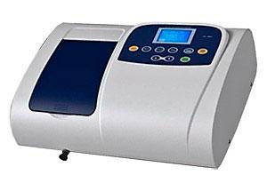
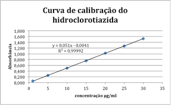
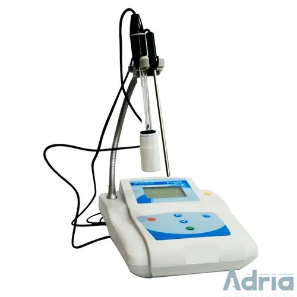
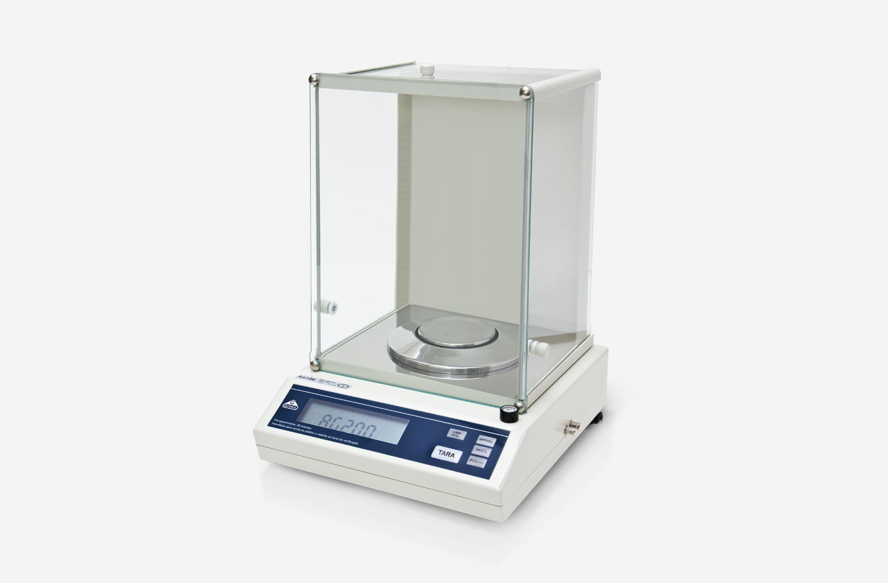
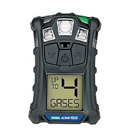
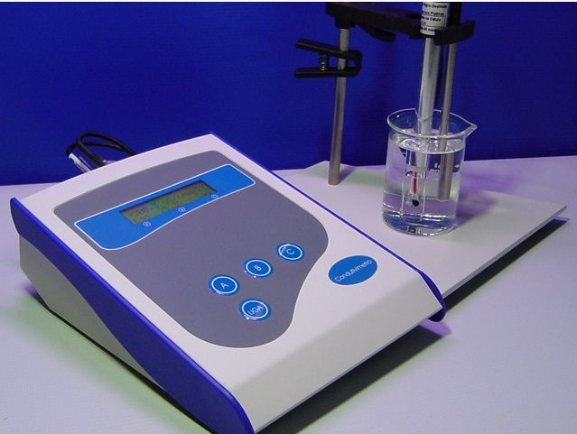

Bem-vindo ao Laboratório Virtual
Use o menu acima para explorar: Quiz, Dúvidas, Equipamentos, Indústria, Laboratório Industrial e a Tabela Periódica.
Quiz de Química
Tire sua dúvida
Equipamentos de Laboratório (rápido)
Instrumento que mede absorbância em função do comprimento de onda; usado para quantificação de analitos por Beer-Lambert.

Exemplo de curva absorbância × concentração usada para quantificação.

Usado para medir o potencial hidrogeniônico; calibração periódica em tampões padrão é obrigatória.

Equipamentos Industriais
Na indústria química, os profissionais monitoram variáveis como pressão, temperatura e concentração. A instrumentação industrial garante segurança e precisão.
Resolução típica 0,0001 g; usada em preparo de padrões e pesagens críticas.

Mede condutividade elétrica de soluções (µS/cm a mS/cm) — útil para controle de pureza e concentração iônica.

Monitora gases tóxicos e inflamáveis; integração com CLP e alarmes é prática comum em plantas.


Laboratório Industrial — Controle de Qualidade (Técnico)
1) Espectrofotometria UV-Vis — princípios e aplicação
Princípio físico: um espectrofotômetro UV-Vis mede a absorbância de uma amostra em função do comprimento de onda. A absorbância A está relacionada à concentração c pela Lei de Beer-Lambert:
A = ε · b · c
onde ε é o coeficiente de absorção molar (L·mol⁻¹·cm⁻¹), b o caminho óptico (cm) e c a concentração (mol·L⁻¹). Em aplicações industriais usamos a região 190–1100 nm para cobrir UV e visível, permitindo detectar grupos funcionais e complexos metálicos usados em análises de P, N e K após preparo adequado.
2) Curva de calibração e quantificação
Para quantificação, constrói-se uma curva de calibração com padrões de concentração conhecida. Procedimento típico:
- Preparar pelo menos 5 padrões com concentrações uniformemente distribuídas na faixa esperada.
- Medir absorbância no comprimento de onda de máxima resposta (λmax).
- Traçar absorbância × concentração e ajustar por regressão linear (R² ≥ 0.995 para método validado).
- Calcular concentração das amostras interpolando na curva.
3) Preparo de amostras (boas práticas)
Preparo padronizado garante reprodutibilidade:
- Homogeneização da amostra — evitar estratificação.
- Digestão ou extração quando necessário (ex.: digestão ácida para P total).
- Filtração/centrifugação para remover partículas que causam espalhamento (scattering).
- Diluição em branco adequado para ficar dentro da faixa linear da curva de calibração.
4) Equipamentos auxiliares e métricas importantes
Calibração em 2 ou 3 pontos (pH 4, 7 e 10). Precisão e drift devem ser verificados antes de ensaios críticos.
Resolução típica 0,0001 g. Verificar linearidade e tara; usar peso padrão certificado para verificação periódica.
Mede condutividade (µS/cm a mS/cm). Usado em checagem de soluções e controle de pureza.
5) QA / QC e validação de métodos
Elementos essenciais do sistema de qualidade:
- Blancos analíticos e padrões de controle em cada lote de análises.
- Réplica analítica (n ≥ 2) e cálculo de desvio padrão e RSD (%).
- Intervalos de aceitação — ex.: RSD ≤ 2% para análises de rotina (dependendo do método).
- Plano de calibração do instrumento e registros (rastreamento).
6) O que faz um químico industrial?
O químico industrial atua em várias frentes dentro da planta e do laboratório:
- Desenvolvimento e otimização de métodos analíticos (espectrofotometria, titulação, cromatografia quando aplicável).
- Interpretação de dados analíticos e emissão de laudos técnicos.
- Controle de processos: ajuste de pH, concentração de reagentes, ponto de equivalência, etc.
- Gestão de qualidade: elaboração de SOPs, validação de métodos, investigação de desvios e ação corretiva.
- Segurança química: análise de riscos, práticas de contenção e descarte de resíduos.

7) Exemplo de fluxo analítico (síntese)
- Recebimento de amostra e codificação (etiqueta com ID).
- Preparação: secagem/homogeneização/digestão conforme método.
- Medida em instrumentação (ex.: UV-Vis em λmax definido).
- Tratamento de dados: subtrair branco, aplicar diluição, interpolar na curva de calibração.
- Registro no sistema e emissão de relatório com incerteza e verificação de conformidade.
Observação: este conteúdo é um resumo técnico — para procedimentos rotineiros use SOPs documentadas pela unidade e siga normas ABNT/ANVISA/MAPA quando aplicáveis.